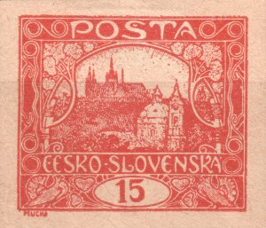

1
1Proofs
Before a printing forme began turning out stamps for the post, trial impressions were taken from it. They served to judge the drawing, the colour and the impression — and so were usually printed in a colour other than the definitive one and on better paper, to show what the forme could do rather than what the paper allowed. For the study of the plates they have a particular value: they capture the forme in a state that wear has not yet touched, and sometimes before the last alterations were made to it.
Field 96/I — a blue proof on coated paper

| Shade | blue — a colour in which the stamp never appeared |
|---|---|
| Paper | coated, smooth and white; against the rough paper of the ordinary printing it holds a far finer image |
| Format | imperforate, with wide margins |
| Stamp field | 96 / plate I |
| State of the plate | the impression is sharp throughout — the plate was not yet worn |
The difference from an ordinary stamp is obvious at once. On the rough paper of the ordinary printing the fine hatching of the trees and roofs merges into solid areas; on coated paper it stays separated. The same holds for the outlines of the ornament: on production copies they tend to be thickened or broken, here they are thin and continuous. The proof therefore serves not merely as a collector's rarity but as a reference image — it shows what the drawing looked like before plate wear and the qualities of the paper began to take from it.
Compared with the production field 96/I

Between the proof and the production run the design of this field was worked on. The difference is therefore not one of sharpness alone: the forme was still being altered between the two impressions. Two changes are recorded.
1 · Retouch of the spiral — from Is to IIs
The deciding spiral is in the top left corner of the design — the left one of the pair in the corner ornament, the same one the Fifth-design types page describes as the type feature. On the proof it is open (Is): the inner coil runs round and ends free. In production it is closed (IIs) — the coil shuts into a full ring. On this field, then, the spiral type is not a property of the original cliché but the result of a later alteration — which matters for how the types on plates I and II are read. An overview of the fields and of both types is on the Fifth-design types page.

A question follows that we cannot yet answer: are the nine fields of plate I that carry the open spiral in production as well (2, 21, 22, 23, 49, 83, 91, 92, 94) precisely the fields that this alteration passed by? Further proofs from the same plate could answer it.
2 · Alteration of the fan at the right-hand dove

The second alteration concerns the fan to the right of the right-hand dove. On the proof the rays of the fan are longer and clearly separated from one another; in production the fan is drawn differently. Part of the difference is down to the paper and to wear, but the outline of the fan differs even where the production impression is still legible.

Field 68/I — a black proof, the design's final state

| Shade | black — a colour in which the stamp never appeared |
|---|---|
| Paper | cream, finely textured |
| Format | imperforate |
| Stamp field | 68 / plate I |
| State of the plate | matches the production printing — no later alteration to the design |
Unlike field 96/I, this field is the opposite case. Set beside the production impression of the same field (from the reference set of plate I positions), the drawing matches down to the last detail — including a small irregularity in the top left corner of the frame that field 68 carries as its identifying mark on every printing plate. It appears identically on both the proof and the production copy, so no alteration was made to the forme between the two impressions.

Field 68/I complements field 96/I from the opposite side: on 96/I the proof caught the forme before two alterations, on 68/I the forme was already definitive at the time of this impression. Not every field of plate I, then, was at the same stage of completion when the proofs were pulled.
A full black pane — the control numbers
Besides the individual proofs, a full pane (10×10 fields) of POFIS 7 (the 15h) has also survived, printed entirely in black and imperforate — the same purpose as the other proofs, but at the level of a whole pane rather than a single field. The span 1918–1920 corresponds to the period in which this issue's sheets carried what are called control numbers.

The control numbers are running totals printed beneath each column of ten stamps — 1.50, 3.-, 4.50, 6.-, 7.50, 9.-, 10.50, 12.-, 13.50, up to 15.- Kč for the whole pane (10 × 15h = 1.50 Kč per column). A post-office clerk could therefore confirm that no stamp was missing from the sheet simply by checking the last printed figure against the price of the full pane, without having to count the individual stamps.

| Catalogues | POFIS 7 (the 15h) |
|---|---|
| Printing plate | VI |
| Period | 1918–1920 |
| Shade | black — a colour in which the stamp never appeared |
| Format | imperforate pane, 10×10 fields |
Colour trials
Before it was decided in what colour and on what paper the stamp would be printed, the same forme was pulled several times as a trial. The pieces below come from such a series: the same design, each time in a different colour or on a different stock. Besides black and brown-black there is a blue, several shades of red, and two impressions on pinkish paper.
For the study of the plates these impressions are valuable precisely because they are clean — imperforate, uncancelled and printed more carefully than the production run. The design is legible down to the last stroke, so it can be compared with production stamps of the same sheet position.
1A brown-black proof on yellowish paper, imperforate — sheet position 7/II.
 2
2A deep black proof on white paper, imperforate — sheet position 40/I. The sharpest impression of the group; it holds even the finest engraving of the sky hatching.
 3
3A blue proof, imperforate — sheet position 6/I. The shade is cooler and the paper whiter than on the blue proof of field 96/I above.
 4
4A red proof on yellowish paper, imperforate — sheet position 70/I.
 6
6A red-orange shade — sheet position 40/II. Unlike the other pieces in the group it is perforated.
 7
7A red print on pinkish paper, imperforate — sheet position 90/IV; a trial of the stock, not of the ink.

11A red-orange proof on pinkish paper, imperforate — sheet position 82/I. The second impression of the group on pink stock (cf. ZT 7), this time from the first plate; wider margins than the other pieces.
Click a specimen to enlarge it. For every piece the sheet position and the plate have been determined by comparison with the reconstructed plates. It is worth noting that the group does not come from the first plate alone: it contains pieces from plates I, II and IV, so trials were pulled at a later stage of production too, not only before it began.
Waste print
Waste is paper spoiled during printing that was never meant to leave the works. It arises mainly while the press is being run up, before the pressure and the inking are set. Once spoiled, however, a sheet was good for nothing but further trials — and that is exactly what this piece shows.
The 15h design comes from sheet position 46 of the fourth plate. Over it, however, lies a second, fainter impression — and that one does not belong to the 15h: the printing plate of the 500 h value of the same issue was being tried on the very same sheet. The sheet therefore went through the press twice, each time with a different forme.


How to spot the foreign impression
This is harder than one might expect, because the 500 h carries the same view of Hradčany as the 15h — it differs in the value in the oval and in the ornaments of the frame. The two impressions therefore largely coincide and merge into one blurred surface. It is the ornaments that give it away: in the sky above the castle, where the 15h design leaves the paper light, concentric spirals appear that have no business being there. The second impression is also fainter and out of register, so it does not line up with the frame either.
How it differs from a blurred and from a double print
A blurred print is a single stamp with excess ink on an otherwise proper sheet. A double print is a second impression of the same forme, merely displaced. Here the second impression comes from an entirely different plate, and of a different value — something that cannot happen on a sheet meant for issue. That combination is the surest sign that this was waste: with paper already written off, anything could be tried.
Waste is not a catalogue variety. It was not issued, has no postal validity, and its value is documentary — it shows production at a moment when it was not yet right and, in this case, that the same sheets were used to try one plate after another. With pieces offered for sale it is therefore worth asking about provenance.
Why proofs matter for the study of the plates
- A reference state. They show the design before wear began to take from it. Anything missing or thickened on a production copy can be measured against them.
- They separate retouch from wear. When an element differs in shape between proof and production, wear is not the explanation — the plate was altered in between. That is exactly the case of the spiral on this field.
- They date the development of the plate. A proof is a fixed point before production began. The stages of the plate flaws the site follows at the crack at 11/II or among the white spots can be reckoned from it.
- They establish what is original. For a disputed deviation they answer whether it was in the plate from the outset or appeared during use.
This section will grow. Every further proof will get a part of its own with the same structure: a description of the item, a comparison with the corresponding production field, and an account of what happened to the plate between the two impressions.